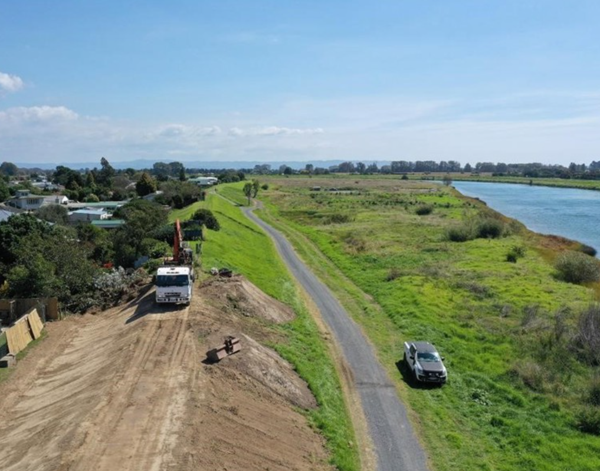
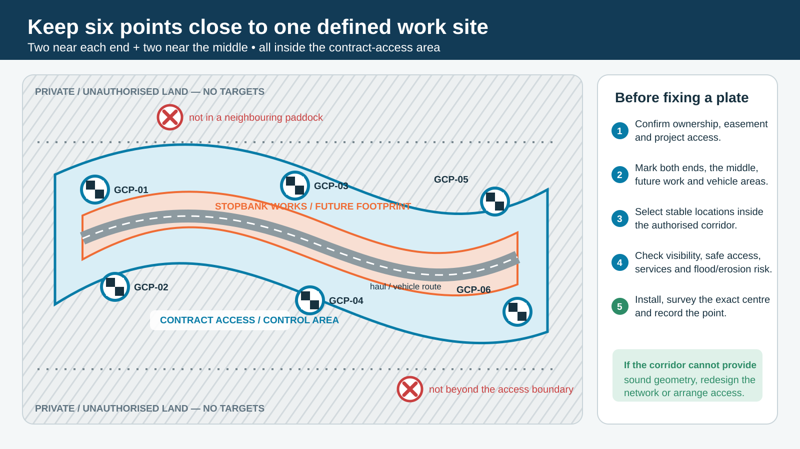
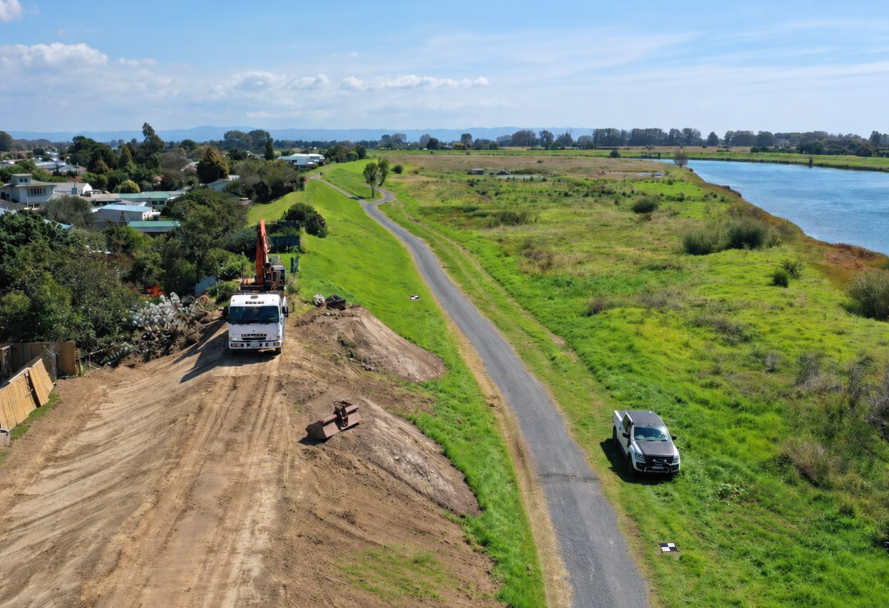
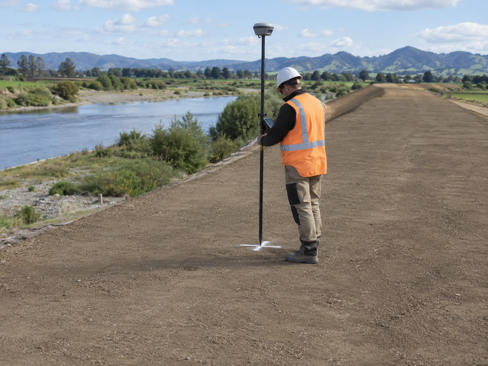
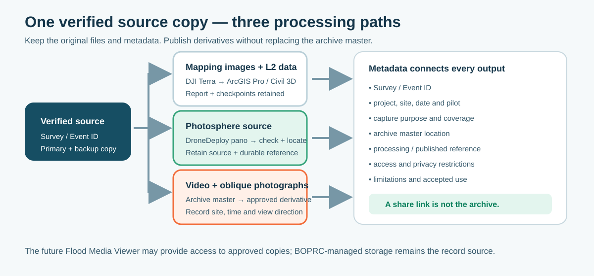
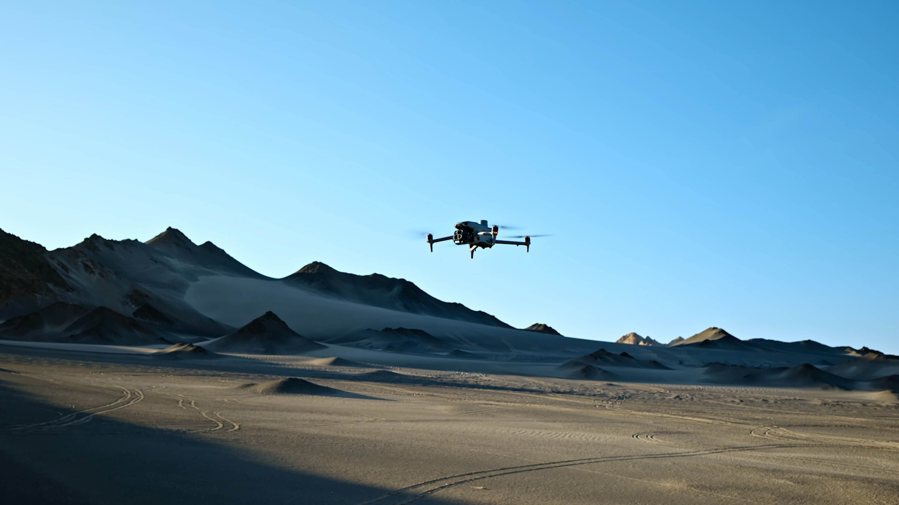
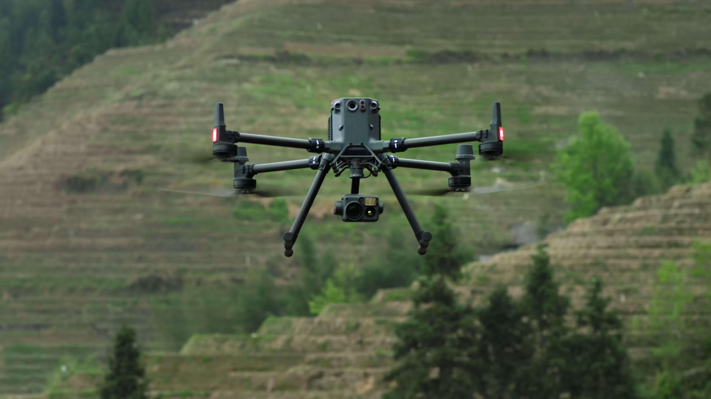
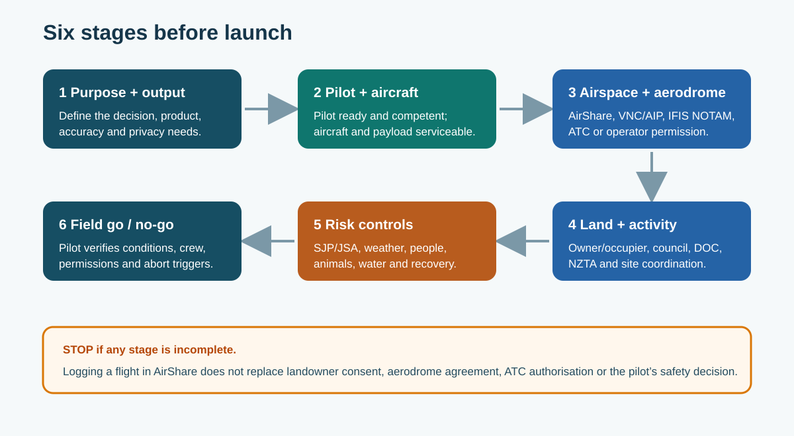

1. Purpose and operational responsibilities
1.1 Why we operate drones
The Engineering, Rivers & Drainage team uses drones to capture accurate, timely and repeatable information to support engineering decisions, construction monitoring, asset management and flood response.
Typical work includes:
- engineering drone surveys used in design activities;
- construction progress using survey, video and aerial-photography outputs — including quantities, as-built records, and a dated record of key construction activities and surfaces;
- stopbank, river, drain and coastal inspections;
- gravel-extraction calculations;
- orthophotography, surface models and LiDAR;
- flood and emergency response, including flood-extent mapping and recording debris lines; and
- clear project communication for team, management, stakeholder and special-interest-group meetings.
Overview animation — why and how we use drones
This short narrated overview explains the construction-survey lifecycle and the wider value of drone capture for managers, project teams and contractors.








Narrated overview · approximately 4 minutes
Why we use drones
Bay of Plenty Regional Council uses drones to create an accurate and repeatable aerial record of engineering work. The value is not simply the flight. It is the consistent evidence the flight provides for design, construction decisions, quantities, inspections, project communication, and flood response.
Read the full narration
- Why we use drones. Bay of Plenty Regional Council uses drones to create an accurate and repeatable aerial record of engineering work. The value is not simply the flight. It is the consistent evidence the flight provides for design, construction decisions, quantities, inspections, project communication, and flood response.
- Plan the whole occupied area. Before the first flight, the team plans the full project area. That means more than drawing around the stopbank earthworks. The capture must include the establishment area, vehicle movements, haul routes, laydown areas, and enough surrounding ground to produce reliable information at the edges. The route must stay within authorised airspace and land access.
- Install permanent project control. During the pre-construction walkover, the team installs permanent ground control plates. These points sit within the authorised contract area, but outside current and future earthworks, plant tracking, haul routes, and laydown areas. They are surveyed, photographed, labelled, and protected so the same control can be recovered throughout the project.
- Capture the baseline. The first flight creates the pre-construction baseline. It records the original ground and the wider area affected by the works. Once the coverage and quality have been checked, the flight route is saved. This baseline gives the project a consistent starting point for every later comparison.
- Repeat at meaningful milestones. As construction progresses, the team repeats the same safe route at meaningful milestones. A flight after stripping records the exposed formation. Later flights capture important activities and new surfaces. Repeating the route improves consistency, while any necessary change to coverage is recorded deliberately rather than made by accident.
- Coordinate with the site. Every visit is coordinated with the site manager or project contact. The drone team completes the required induction, sign-in, and health and safety process, confirms plant movements and exclusion areas, and makes sure people on site know when photography, video, or LiDAR capture will occur. This is both a safety control and normal professional courtesy.
- Measure independent checkpoints. At key stages, the team also places temporary independent checkpoints on surfaces that matter. Examples include the top of a newly built stopbank, the bottom of a trench, or the top of a new culvert. Each checkpoint is measured independently with an RTK GNSS rover. It is not used to adjust the model; it is used later to test the finished result.
- Survey before surfaces disappear. Before topsoil covers the completed earthworks, another flight records the bare constructed surface. This is often the best opportunity to capture the geometry used for quantities, as-built records, and future investigation. The route must cover the full work area, the control, and an adequate margin beyond it.
- Complete the final as-built flight. After topsoil and final works are complete, the team flies the checked route again for the final as-built record. Together, the baseline and milestone surveys show what changed, when it changed, and what was present before features became hidden or inaccessible.
- Process, check and retain the evidence. After every flight, the source data is protected and processed through the appropriate workflow. Ground control may be used to align the survey, while independent checkpoints test accuracy. The quality report, checkpoint results, source media, accepted surfaces, and project metadata are retained together so the result can be understood and defended later.
- One capture supports many decisions. This same drone programme supports much more than earthwork measurement. It provides photography and video for meetings and stakeholder updates, clear records of construction activity, terrain and inspection products for engineering, and rapid evidence during floods, including debris lines and coastal change. The aim is simple: capture the right information, at the right time, and make it useful to the people making decisions.
Our two principal survey systems are:
| DJI Matrice 4E | DJI Matrice 350 RTK + Zenmuse L2 |
|---|---|
 |
 |
| Routine mapping, progress photography, inspection, video and Photospheres using network RTK/NTRIP. | Specialist LiDAR work, including terrain beneath vegetation and larger or more complex survey sites. |
Figure 1. BOPRC's principal engineering survey aircraft. Images: DJI official product pages.
A successful job is more than a completed flight. We need a clear purpose, a competent pilot, the right permissions, a safe site and data that is suitable for the decision it will support.
1.2 The working team
| Person | What they do |
|---|---|
| Pilot | Plans and controls the flight, completes the final go/no-go check and lands or stops whenever conditions are unsafe. |
| Observer / spotter | Watches for aircraft, people, animals, vehicles and obstacles, and gives clear warnings to the pilot. The observer must not be distracted by another task. |
| Site supervisor / project contact | Coordinates access, workers, plant, exclusion areas and the flight window. |
| Survey / technical lead | Confirms the required output, coordinate system, accuracy, control, capture settings and quality checks. |
The pilot's safety decision is final. Anyone may call stop when they see an immediate hazard.
1.3 Six stages before launch
Use the same six stages for every job. The amount of planning will vary, but no stage is optional.

Figure 2. Define the job, confirm the pilot and aircraft, check airspace and access, control the risks, then make the field go/no-go decision.